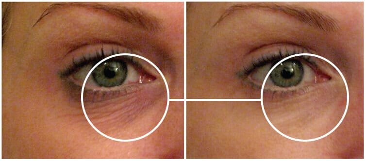
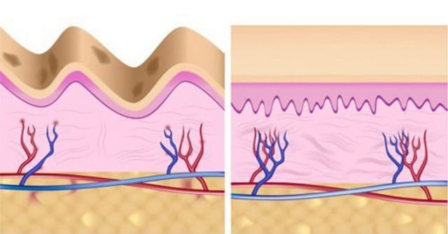

Ich nutze Biorecin seit drei Wochen und ich sehe wirklich 5 Jahre jünger aus! Natürlich nicht so gut wie früher, aber deutlich besser als vorher! Meine Falten sind viel feiner und verschwinden immer mehr von Tag zu Tag. Vielen Dank für den Artikel!
Würden Sie 5 Minuten ausgeben, um 15 Jahre jünger auszusehen? Einу neue Anti-Falten-Creme des berühmten Experten Matthias Schönhofer macht das möglich! Schönheits-Chirurgen sind sauer!
Bitte beachten Sie, dass die in den obigen Bildern gezeigten Personen das Produkt nicht direkt bewerben, jedoch die Inhaltsstoffe dessen Formel genutzt haben.
Matthias Schönhofer hat vor kurzem diese Anti-Aging-Creme herausgegeben und es Biorecin genannt. Entdecken Sie, wie Sie halb so alt aussehen können wie Sie tatsächlich sind!
Matthias Schönhofer hat diese revolutionäre neue Creme Biorecin herausgebracht, das dieselben Effekte wie Facelifts und Botox hat, jedoch absolut keinen operativen Eingriff benötigt! Er hat die Creme jahrelang für sich behalten und es nur zu saftigen Preisen an Stars und Sternchen verkauft. Jetzt, viele Jahre später, veröffentlichte der Spezialist Biorecin, um Menschen von unnötigen Operationen abzuhalten. Zu Testzwecken haben wir unsere Derma Today Mitarbeiterin Marie Allenreich abbestellt, um diese Verjüngerungscreme auszuprobieren. Während ihrer 30-jährigen Ehe hat sich Maries Haut wegen konstantem Stress', Sonnenstrahlen, gelegentlichen Alkoholkonsum sowie Rauchen stark verändert. Marie wird die von Matthias Schönhofer empfohlene Creme nutzen - Biorecin - um ihre Haut jung und straff halten. Lesen Sie weiter und entdecken Sie, wie Marie Allenreich dank eines Tipps von Matthias Schönhofer um Jahrzehnte jünger aussehen kann
"Meine Haut war sehr straff und schön, als ich noch jünger war und ich hatte nie irgendwelche Probleme mit der Haut. Ich erhielt meinen Uni-Abschluss ohne eine einzige Falte im Gesicht. Als ich dann begann, in einem Unternehmen zu arbeiten, habe ich mir einige schlechte Angewohnheiten angeeignet. Ich nutzte nur unregelmäßig Sonnencreme, trank Alkohol und rauchte auch ab und zu.
Im Laufe der Jahrzehnte schwoll mein Gesicht regelrecht an. Die Falten machten mich irre. Ich fühlte mich miserabel und unsicher... Wenn ich mit Freunden ausging, war ich immer unsicher und rannte häufig ins Bad, um mein Make-Up zu korrigieren. Ich sah mich nicht gerne im Spiegel und habe sie möglichst vermieden.
Während der letzten 10 Jahre habe ich jede Menge Geld für Anti-Aging-Produkte ausgegeben. Ich denke das werden viele Leser kennen. Doch die Ergebnisse waren sehr klein, falls überhaupt vorhanden.
Heute bin ich froh, eine neue Anti-Aging-Creme namens Biorecin vorstellen zu dürfen. Ich wollte endlich meine Haut und besonders mein Gesicht wieder schöner machen. Es war auch an der Zeit, da ich sonst wie meine eigene Oma ausgesehen hätte."
Marie probierte eine Methode nach der anderen - ohne Ergebnis. Sie legte sich fast schon unter das Messer, zögerte jedoch immer wieder. Es schien hoffnungslos, bis sie in einer ihrer Lieblingssendungen das Geheimnis von Biorecin erfuhr.
Vorher Nachher
Als Marie von der Creme erfuhr, war sie extrem überrascht, wie einfach, günstig und effektiv die Technik war. Sie probierte es an sich selbst aus.
Wir von Derma Today haben jede Menge E-Mails von unseren Lesern erhalten, die nachfragten, wie Biorecin funktioniert, sodass wir extra diesen Artikel geschrieben haben. Wir haben das Produkt an Marie getestet und die Ergebnisse sind eindeutig. Weiterlesen...
Der Experte meinte, dass es an der Zeit war, sein großes Geheimnis zu lüften, an dem er so lange gearbeitet hatte. Er hatte es satt, dass Menschen tausende Euro in teure und ineffektive Produkte oder Operationen steckten, wo es doch eine deutlich günstigere und viel wirkungsvollere Lösung gab. Vor einigen Wochen hat er dann sein Geheimnis gelüftet und begann, Biorecin weltweit zu verkaufen.
 "Unzählige Frauen auf der ganzen Welt haben so ihre Augensäcke und Unebenheiten der Haut heilen können - dank der Biorecin Anti-Aging-Creme."Matthias Schönhofer arbeitete hart jahrelang an einer Lösung und musste nach unzähligen Tests und Studien auch Rückschläge hinnehmen. Doch letztendlich gelang der Durchbruch mit einem Produkt, das Frauen wirklich 10 bis 20 Jahre jünger aussehen lässt - und das in weniger als einem Monat! Das Produkt ist zu 100% sicher und kostet quasi nichts im Vergleich zur Konkurrenz! Das "Wunder" basiert auf der einmaligen Kombination aus Schlüsselinhaltsstoffen von Biorecin.
Vorher Nachher
"Ich bin 55 Jahre alt und sehe aus wie mit 30. Das ist nur dank der Zutaten von Biorecin möglich. Ich möchte dem Spezialisten für dieses Wunder danken" - Jessika Jehle
Doch was sind diese Komponenten?
Schlüsselstoffe zum Anti-Aging:
Hydrolyzed Collagen

Diese Inhaltsstoffe fungieren zusammen, um Falten und feine Hautunebenheiten selbst unter der Hautoberfläche zu lösen. Genau deswegen ist diese Creme so effektiv.
Hydrolyzed Collagen - die Quelle der Jugend
Das erste Stück des Anti-Aging-Puzzles Matthias Schönhofer sprach von dem Hydrolyzed Collagen .
Hydrolyzed Collagen ist das Geheimnis, um das Alter auszutricksen
Hydrolyzed Collagen dringt tief in die beschädigte Haut ein und macht sie straffer und glatter.
Vorher Nachher
"Was Hydrolyzed Collagen macht, hilft dabei, die alte trockene oder tote Haut zu entfernen und durch neue regenerierte Haut zu ersetzen. Unsere Tests ergeben, dass Sie in 14 Tagen bis zu 20 Jahre jünger aussehen können. Der Schlüssel zum Erfolg liegt jedoch darin, Cremes zu verwenden, die nur qualitativ hochwertige Inhaltsstoffe hat. Denn das ist nicht immer der Fall. Das einzige vielversprechende Produkt in unseren Tests war Biorecin. Dieses Produkt empfehle ich auch all meinen betuchten Kunden." - Matthias Schönhofer
"Wie verwende ich es?"
Das ist eigentlich sehr einfach. Verwenden Sie das Produkt einfach morgens und abends. Tragen Sie eine Menge der Creme auf die gereinigte Haut auf, mit leichten Massagenbewegungen, die die Creme völlig eingezigen wird. Der Experte sagte in der Sendung: "Der Trick besteht darin, Biorecin täglich aufzutragen." Dieses Produkt enthält eine hohe Konzentration an Hydrolyzed Collagen.
Wir wollten es testen!
Wie waren nach der Sendung sehr aufgeregt und wurden von E-Mails und Briefen regelrecht überflutet. Wir wollten die Inhaltsstoffe der Creme selbst untersuchen, bevor wir über dieses Produkt berichten konnten. Schließlich haben wir uns dazu entschieden, einen Freiwilligen zu suchen. Marie Allenreich hat sich dazu bereiterklärt, das Produkt zu testen. Und das sind ihre Ergebnisse.
Maries 14 Tage Biorecin Ergebnisse:
Marie ist 62 Jahre alt, lebt in Schwerin und hat 2 Enkel. Wie die meisten Frauen ihres Alters hat sie schon altersbedingte Falten im Gesicht. Marie sagte, sie würde Biorecin ausprobieren, da kein anderes Produkt bisher half. Sie unterzog sich fast schon einem teuren und risikoreichen Facelift. Biorecin war ihre letzte Chance.
Hier sind die Ergebnisse...
TAG 1:
"Nach dem ersten Anwendungstag von Biorecin war ich echt von den drastischen Ergebnissen geschockt. Die Falten, die dunklen Punkte und selbst feine Linien waren deutlich weniger sichtbar! Ich war echt von den Ergebnissen überwältigt und fühlte mich bereits 15 Jahre jünger. Ich konnte fast dabei zusehen, wie die Falten verschwanden!
Ich weiß echt nicht, wie ich es sonst beschreiben könnte. Es fühlte sich warm an den Augen. Ich schaute in den Spiegel und sah mein Gesicht ein wenig gerötet - das Ergebnis einer besseren Durchblutung der Hautoberfläche und der Verjüngung meines Gesichts.
Als die Creme vollständig von der Haut absorbiert wurde, sah mein Gesicht straffer aus und strahlte regelrecht."
TAG 5:
"Nach fünf Anwendungstagen von Biorecin konnte ich es kaum fassen, wie sehr ich mit Biorecin anders aussah.
Selbst meine Arbeitskollegen beneideten mich. Sie sahen mich viel gesünder und energiegeladener und wussten nicht, wie das so plötzlich möglich war!
Ich war von den Ergebnissen total verblüfft und fühlte mich wirklich 15 Jahre jünger. Ich konnte meinen Falten beim Verschwinden zusehen und konnte es kaum abwarten, wie es weitergehen würde!"
TAG 14:
"Nach 14 Tagen waren all meine letzten Zweifel verflogen - GENAUSO WIE MEINE FALTEN!
Die Falten und selbst Krähenfüße - alles war weg! Selbst dunkle Punkte auf der Haut verschwanden KOMPLETT. Ich habe noch nie ein Produkt gesehen, dass so gut funktioniert und dabei so günstig ist!
Nach den zwei Wochen blieb meine Haut nicht nur so, sondern verbesserte sich noch weiterhin. Ich meine sie ist so wie vor 20 Jahren! Zu diesem Zeitpunkt waren all meine Freunde und selbst meine Familie geschockt. Sie konnten den Unterschied nicht glauben und meinten, ich hätte mir Botox spritzen lassen. ICH KANN NICHT WARTEN, ihnen diesen Artikel zu zeigen!
"Ich konnte die Umwandlung kaum glauben. Früher fühlte ich mich richtig an und hoffte immer auf eine einfach und effektive Lösung, die meine Falten entfernen würde. Es gibt bei vielen Produkten einen gewissen Hype, aber Biorecin wirkt genauso wie der Spezialist es beschrieben hat.
Ich hätte mir nie gedacht, wie viel Selbstvertrauen ich haben würde. Selbst Männer drehen sich wieder nach mir um. Ich bin natürlich verheiratet, aber es fühlt sich trotzdem gut an."
Vorher- und Nachherbild von Marie Allenreich. Das Bild rechts wurde nach 14 Tagen Anwendung von Biorecin 
Meine Haut sieht unglaublich aus...viel jünger und weicher als noch mit 35 - Vielen Dank Biorecin! Die zweifache Großmutter sprach exklusiv mit Derma Today über Ihre Umwandlung.
Das Fazit:
Mit Biorecin wurde Marie fast 90% all ihrer Falten los. Die dehydrierte Haut wurde regeneriert.
Wird das auch bei Ihnen funktionieren?
Es gibt jede Menge gefeierte Produkte auf dem Markt. Viele davon sind unheimlich teuer und zum größten Teil auch wirkungslos. Bei einer so großen Auswahl ist es richtig, skeptisch zu sein. Wir möchten unseren Lesern nichts garantieren. Aber wir können die Meinung des Experten nur teilen: Probieren Sie es doch einfach selbst aus!
Bitte bedenken Sie, dass Sie Biorecin täglich anwenden sollten.
Wir haben Ihnen hier den Link zum Produkt Biorecin für Sie. Zum Zeitpunkt der Veröffentlichung dieses Artikels gibt es eine Probeversion von Biorecin . Nutzen Sie die folgenden Links und Sie erhalten den günstigsten Preis.
Links:
SONDERANGEBOT für kurze Zeit
(VORRAT KANN SCHNELL SCHWINDEN - BESTELLEN SIE JETZT BEVOR ES ZU SPÄT IST)
WICHTIG: Der berühmte TV-Experte empfiehlt, dass Sie dieses Produkt TÄGLICH nutzen MÜSSEN, um die gewünschten Ergebnisse zu erzielen.
Spezialpreis: Erhalten Sie eine Packung Biorecin
Neue # Kommentare:
-
André BallertJa dieses Mittel ist einfach extrem gut! Meine beste Freundin nutzt es und ich selbst versuche seit vielen Jahren, meine Falten loszuwerden. Vielleicht kann ich es mit dieser Creme endlich schaffen, um auf der Hochzeit meiner Tochter gut auszusehen. Die Bestellung ist raus!
-
Maria DanschterIch habe mich getraut und eine Bestellung aufgegeben. Mal sehen wie gut es wirklich ist.

"Diese berühmte Creme namens Biorecin ist wirklich die beste Creme, die ich jemals verwendet habe. Ich dachte schon meine Jugend wäre völlig verloren. Ich kann Ihnen nicht genug danken!" Leander Jonfau, 53, hat diese Fotos angehängt. Sie sehen gut aus, Frau Jonfau!
KLICKEN SIE HIER, um Biorecin zu bestellen!
Vorher und nachher
"Ich habe schon seit Ewigkeiten versucht, meine Falten loszuwerden. Biorecin half mir innerhalb einer Woche. Vielen Dank dafür!" Andrea Spender
Chemnitz, Sachsen
"Ich fühle mich zum ersten Mal richtig wohl, wenn ich in den Spiegel schaue. So viel Selbstvertrauen hatte ich seit Jahrzehnten nicht me Kathrin Meyer
Burgdorf, Sachsen